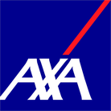

Steinschlag-Reparatur
mit Teilkasko
Reparatur mit HarzVersicherung
Selbstbeteiligungentfällt meist
Beitrag / SF-Klassebleibt gleich
Papierkrammachen wir
Du zahlst0 €*
Danke und gute Fahrt!
Steinschlag, Riss oder Scheibe raus: Wir reparieren und tauschen Autoglas für alle Marken, oft noch am selben Tag. Mit deiner Versicherung rechnen wir direkt ab.
Direkt abgerechnet mit

Der 2-Euro-Test aus der Werkstatt: Ist der Steinschlag kleiner als eine 2-Euro-Münze und sitzt nicht direkt vor dem Fahrer oder am Rand, reparieren wir ihn. Probier es aus. Sicher sagen wir es dir nach einem Foto.
Reparatur.
Klein und außerhalb vom Sichtfeld: Das füllen wir mit Spezialharz, die Scheibe bleibt drin.
Tipp bis zum Termin: Durchsichtiges Klebeband drauf. Dann kommen kein Dreck und kein Wasser rein.
Foto schicken, wir prüfen gratisTag 1: Klack. 4 mm.
Ein Stein von der A59, ein kleiner Stern in der Scheibe. Jetzt reparieren wir das in rund einer halben Stunde, mit Teilkasko meist für 0 €.
Woche 3: Frost.
Nachts minus vier Grad, morgens Gebläse auf heiß. Glas arbeitet bei jedem Temperatursprung und bei jedem Schlagloch. Der Stern reißt weiter.
Jetzt ist es ein Riss.
Reparieren geht nicht mehr. Die Scheibe muss raus, und bei der Hauptuntersuchung kann ein Riss im Sichtfeld zum Mangel werden.
Lieber heute reparierenJede Zeile ist eine direkte Anfrage. Antippen, WhatsApp geht auf, die Leistung steht schon drin.
Steinschlag reparieren: mit Teilkasko meistens nichts. Neue Scheibe: deine Selbstbeteiligung. Den Rest machen wir mit der Versicherung.
Ein Glasschaden läuft über die Teilkasko. Die hat keine Schadenfreiheitsklasse, dein Beitrag steigt also nicht.
Wir rechnen direkt ab mit
und allen anderen Kfz-Versicherern.
Steinschlag-Reparatur
mit Teilkasko
Reparatur mit HarzVersicherung
Selbstbeteiligungentfällt meist
Beitrag / SF-Klassebleibt gleich
Papierkrammachen wir
Du zahlst0 €*
Danke und gute Fahrt!
Frontscheibe tauschen
mit Teilkasko
Scheibe + EinbauVersicherung
Kamera kalibrierenVersicherung
Beitrag / SF-Klassebleibt gleich
Selbstbeteiligunglaut Vertrag
Du zahlst
z. B. deine SB150 €
30 Jahre Garantie auf Dichtigkeit
* Bei den meisten Versicherern ist die Reparatur ohne Selbstbeteiligung. Ohne Teilkasko nennen wir dir vorab am Telefon einen festen Preis.
Versicherung prüfen lassenKein Formular, keine Warteschleife. Schick uns den Schaden per WhatsApp. Rückmeldung garantiert innerhalb von 24 Stunden, meistens viel schneller.
Schaden und Fahrzeugschein per WhatsApp an 0176 20908479. Oder ruf einfach an.
Reparieren oder tauschen, was es kostet, was die Versicherung zahlt. Ehrlich und vorher.
In der Werkstatt in Duisburg oder mobil bei dir, im Umkreis von 50 km.
Den Papierkram mit der Versicherung machen wir. Du fährst mit klarer Sicht nach Hause.
Vom Kleinwagen bis zum Lkw, vom Camper bis zum Pick-up aus den USA. Was nicht auf Lager ist, besorgen wir und sagen dir vorher, wann es da ist.
Bin ohne Termin hingefahren, eine halbe Stunde später war der Steinschlag ausgebessert.
„Von heute auf morgen einen Termin zum Wechsel. Nach nicht einmal 3 Stunden hatte ich mein Auto wieder.“
„Ich musste mich um nichts kümmern mit der Versicherung. Gehörte alles mit zum Service.“
„Scheibe vom Wohnmobil wurde schnellstens ersetzt. Bester Service, bester Preis.“
„Innerhalb zwei Stunden konnte das Auto wieder abgeholt werden. Preis absolut in Ordnung, deutlich billiger als bekannte Alternativen.“
„In der Nähe gibt es viele Restaurants und Cafés, falls man sich den spannenden Prozess nicht anschauen möchte.“
Auszüge aus Kundenbewertungen, gekürzt.
In der Werkstatt in Duisburg, in Essen oder mobil bei dir vor der Tür. Gummersbach kommt bald dazu.
Duisburger Str. 150, 47166 Duisburg-Obermarxloh
Mo bis Sa 9:30 bis 18:00 Uhr
Termine in Essen nach Absprache. [Adresse folgt]
Wir eröffnen bald im Oberbergischen. Folg uns auf Instagram, dann weißt du es als Erstes.
Echte Schäden, echte Jungs, echte Werkstatt. Kein Stockfoto auf dieser Seite, versprochen.
Auf Instagram folgenIm Entwurf aus einem Screenshot geschnitten. Im fertigen Auftritt kommen hier die echten Fotos vom Shooting in der Werkstatt hin.
Für eine Steinschlag-Reparatur oft ja. Ruf kurz an, dann wissen wir, dass du kommst. Für einen Scheibentausch bestellen wir die passende Scheibe vorher, das geht meistens schnell.
Nein. Glasschäden laufen über die Teilkasko, und die hat keine Schadenfreiheitsklasse. Dein Beitrag bleibt gleich.
Bei einer Reparatur bei den meisten Versicherern nichts. Bei einem Tausch nur die Selbstbeteiligung aus deinem Vertrag. Den Rest rechnen wir direkt mit der Versicherung ab.
Dann nennen wir dir vorab am Telefon einen festen Preis. Keine Überraschung auf der Rechnung.
Nach dem Tausch kalibrieren wir Kamera und Assistenzsysteme neu. Dann arbeiten Spurhalte- und Notbremsassistent wieder zuverlässig.
Meist ein paar Stunden, viele Kunden holen ihr Auto am selben Tag wieder ab. In der Nähe gibt es Cafés und Restaurants, falls du nicht zuschauen willst.
Ja. Im Umkreis von 50 km um Duisburg reparieren und tauschen wir mobil, zuhause oder bei der Arbeit. Prüf oben auf der Karte, ob du drin bist.
Kleb den Steinschlag mit durchsichtigem Klebeband ab. So kommen kein Schmutz und kein Wasser rein, und die Reparatur wird sauberer.
Montag bis Samstag 9:30 bis 18:00. Per WhatsApp rund um die Uhr, Antwort garantiert innerhalb von 24 Stunden.
Foto per WhatsApp